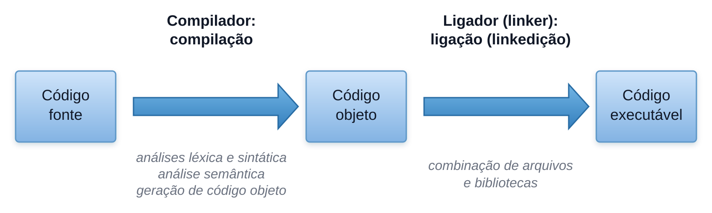
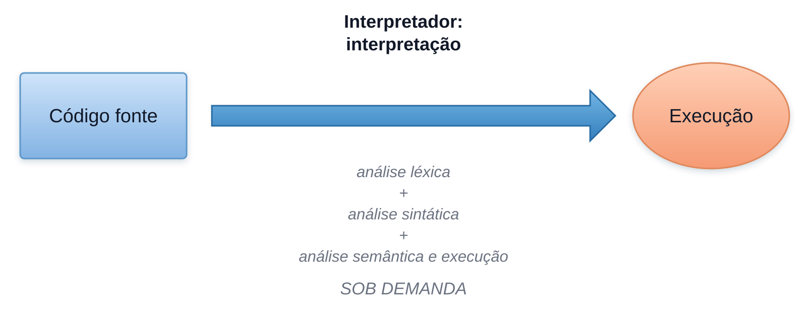
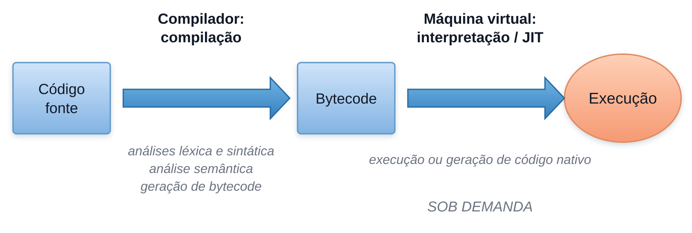
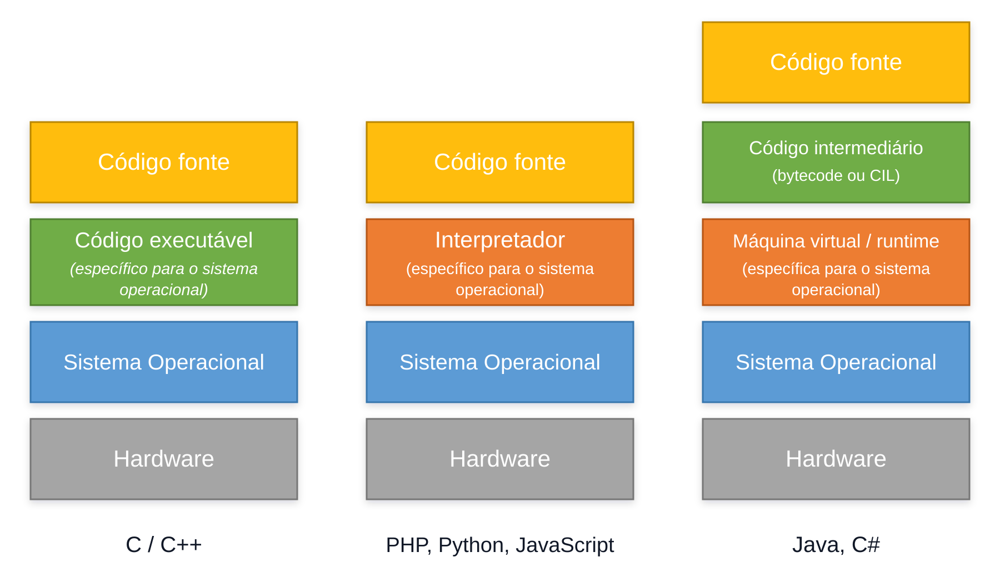

Conceitos de programação
Algoritmos, linguagens, ferramentas e as formas de traduzir e executar um programa.
Roteiro da seção
Cinco blocos conceituais
| Bloco | Conteúdo |
|---|---|
| 1 | Algoritmo, automação e programa de computador |
| 2 | Ferramentas necessárias para criar um programa |
| 3 | Linguagem de programação e tipos de erro |
| 4 | Ambiente integrado de desenvolvimento |
| 5 | Tradução e execução de programas |
Algoritmo, automação e programa
Antes de pensar em código, precisamos saber o que será executado.
O ponto de partida
O que é um algoritmo?
Uma sequência finita e ordenada de instruções para realizar uma tarefa ou resolver um problema.
Exemplo cotidiano
Um algoritmo para lavar uma roupa
- Colocar a roupa em um recipiente.
- Adicionar sabão e amaciante.
- Encher o recipiente com água.
- Mexer até dissolver o sabão.
- Deixar de molho.
- Esfregar a roupa.
- Enxaguar.
- Torcer.
Do procedimento à máquina
O que é automação?
É o uso de uma máquina ou sistema para executar um procedimento de forma automática ou semiautomática.
Instruções para o computador
O que é um programa?
Um conjunto de instruções escrito em uma linguagem de programação. Essas instruções representam algoritmos que o computador consegue executar.
- receber e apresentar dados;
- processar dados e realizar cálculos;
- tomar decisões e repetir operações.
Não são sinônimos
Como os conceitos se relacionam?
Algoritmo
Descreve os passos de uma solução.Programa
Expressa instruções em uma linguagem que poderá ser executada.Automação
Usa uma máquina ou sistema para realizar o procedimento.O que precisamos para criar um programa?
Um mapa das peças antes de estudá-las separadamente.
Quatro peças
Do texto à execução
Papéis diferentes
Quem faz o quê?
Linguagem
Define como representar instruções de maneira precisa.Editor ou IDE
Permite escrever e organizar o código-fonte.Compilador ou interpretador
Traduz ou coordena a execução das instruções.Ambiente de execução
Oferece os recursos necessários para executar o programa.Primeiro contato
Compilador, interpretador e máquina virtual
Compilador
Traduz o código antes da execução.Interpretador
Analisa e coordena a execução do programa.Máquina virtual
Executa código intermediário sobre uma máquina abstrata.Linguagem de programação
Regras para escrever instruções com forma e significado precisos.
Três níveis
Léxica, sintaxe e semântica
Léxica
Como os elementos individuais são escritos.Sintaxe
Como os elementos podem ser combinados.Semântica
Qual significado a instrução possui.Formação dos elementos
Regras léxicas
Delimitada
Não delimitada
Combinação dos elementos
Regras sintáticas
Estrutura válida
Estrutura inválida
O significado
Regras semânticas
Uma instrução pode estar bem escrita e ainda representar o cálculo errado.
Média pretendida
Outro cálculo
Em que momento aparece?
Tipos de erro
| Tipo | O que acontece |
|---|---|
| Léxico ou sintático | A escrita ou a estrutura impede a tradução. |
| Execução | O problema ocorre enquanto o programa está funcionando. |
| Semântico ou lógico | O programa executa, mas produz comportamento incorreto. |
Ambiente integrado de desenvolvimento
A IDE reúne ferramentas, mas não substitui a linguagem nem o raciocínio.
Tudo em uma aplicação
O que é uma IDE?
Um software que reúne ferramentas para editar, traduzir, executar e depurar programas.
Como ela ajuda
Recursos de uma IDE
Editor
Destaque visual e organização dos arquivos.Diagnósticos
Avisos sobre problemas de escrita e estrutura.Execução
Comandos e console reunidos no ambiente.Depuração
Acompanhamento das instruções uma por vez.Ainda sem linguagem de programação
Programa para calcular uma média
- Receber o primeiro número.
- Receber o segundo número.
- Somar os valores.
- Dividir a soma por dois.
- Apresentar a média.
O que permanece?
A lógica do algoritmo.
O que muda?
A sintaxe usada para expressá-lo em cada linguagem.
Tradução e execução
Como o texto escrito pelo programador chega à máquina.
Nomes parecidos, papéis diferentes
Representações de um programa
| Representação | Descrição |
|---|---|
| Código-fonte | Texto escrito em uma linguagem de programação. |
| Código intermediário | Representação destinada a outro software, como uma máquina virtual. |
| Código objeto | Resultado que ainda pode depender de ligação com outros arquivos. |
| Executável | Artefato que o sistema operacional consegue carregar e iniciar. |
| Código nativo | Instruções específicas para uma arquitetura de processador. |
Abordagem compilada
Tradução antes da execução

Abordagem interpretada
Análise e execução progressivas

Abordagem híbrida
Código intermediário e máquina virtual

Visão geral
Três modelos conceituais

O que cada modelo enfatiza
Comparação resumida
Compilada
Código pode ser traduzido e otimizado antes da execução.Interpretada
Alteração e execução podem formar um ciclo mais direto.Híbrida
Código intermediário favorece portabilidade e otimização em execução.O que deve ficar claro
Resumo da seção
- Algoritmos organizam passos; programas expressam instruções executáveis.
- Linguagens possuem regras léxicas, sintáticas e semânticas.
- IDEs integram ferramentas, mas não são obrigatórias.
- Código-fonte pode ser compilado, interpretado ou passar por uma abordagem híbrida.
- As classificações são modelos; implementações reais podem combinar técnicas.
Próxima seção
Introdução à linguagem Java: história, plataforma, versões e primeiro programa.